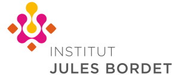
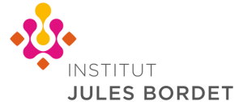

Jeschke group
Applied Cancer Epigenomics and Epitranscriptomics
 

The Applied Cancer Epigenomics and Epitranscriptomics group is led by Dr. Jana Jeschke and based at Institut Jules Bordet at Erasme Campus of the Université Libre de Bruxelles (ULB) in Brussels, Belgium.
Our research is focused on the detection of changes in DNA and RNA modifications in clinical samples of cancer patients using state-of-the-art sequencing technologies. We utilize these changes to improve the stratification of cancer patients for outcome and treatment choice, to identify new targets for cancer therapy and to gain new insights into tumor biology.
Our research is supported by the FNRS, ERC, Association Jules Bordet and Télévie.